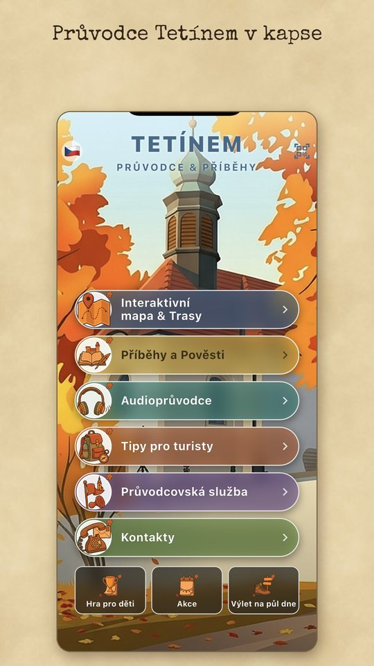
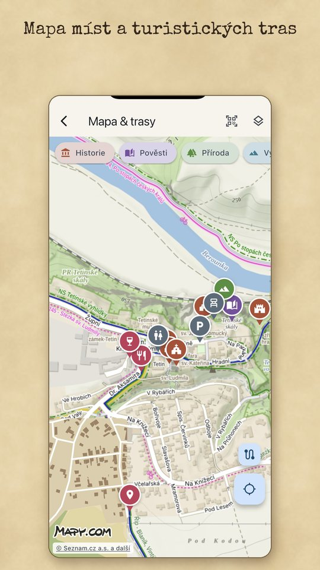
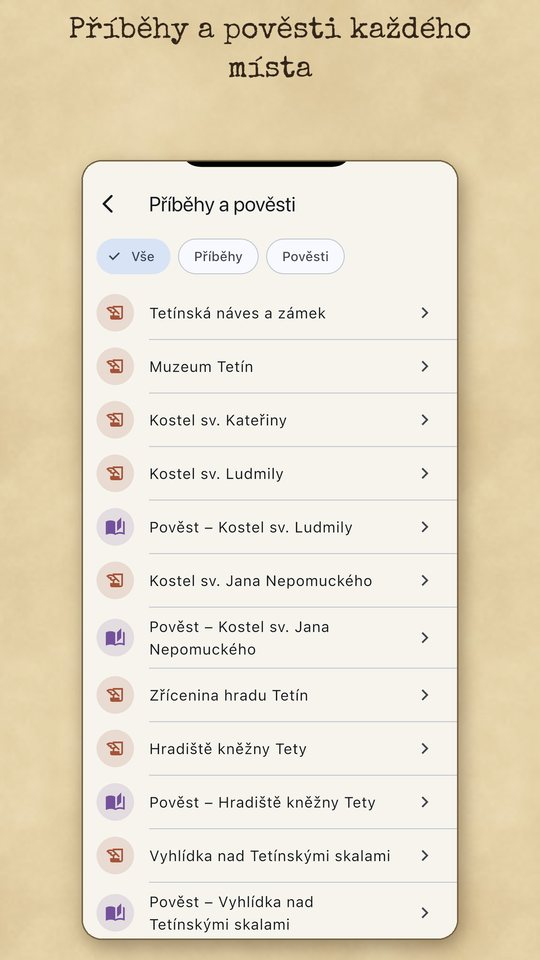
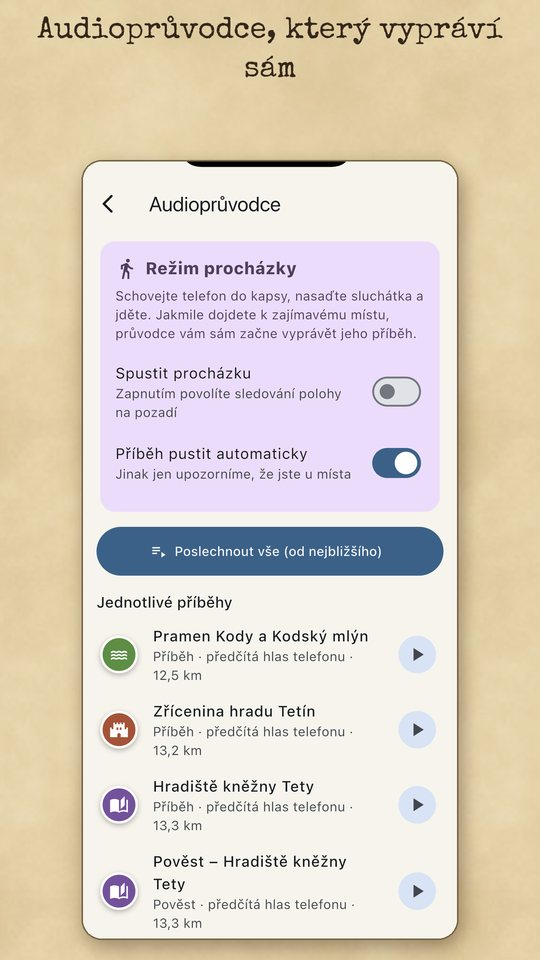
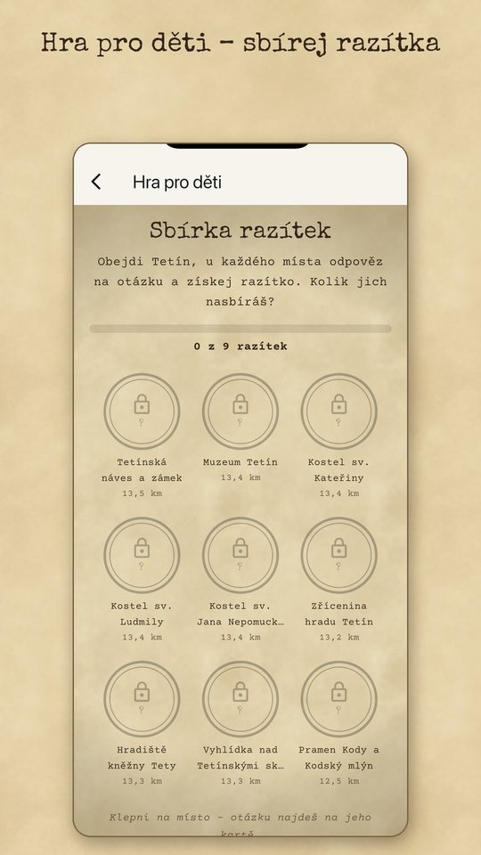
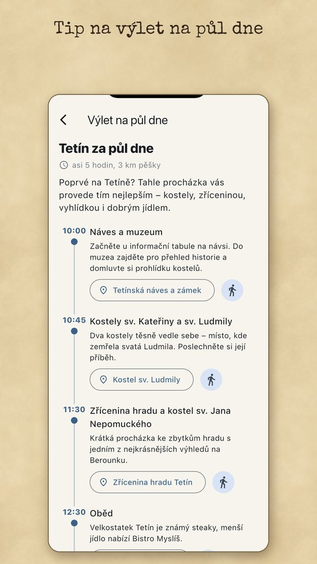
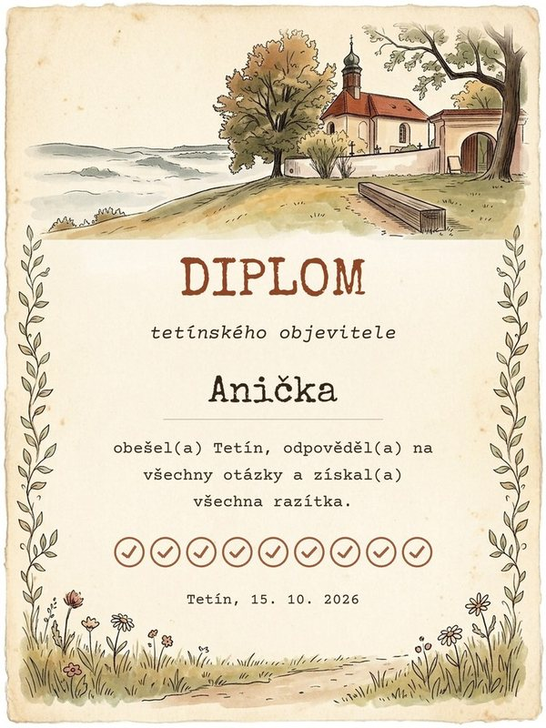
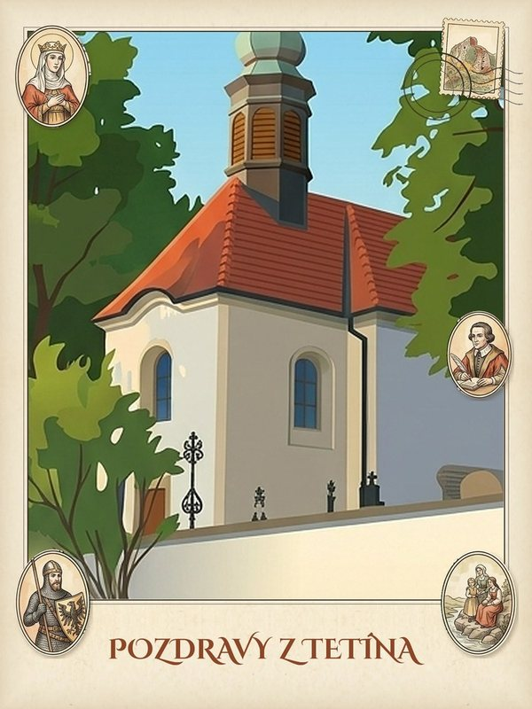

Schovejte telefon do kapsy a vyrazte. Jakmile dojdete k zajímavému místu, průvodce začne vyprávět jeho příběh — i se zamčeným telefonem.
Příběhy, pověsti a zajímavosti o kněžně Tetě, svaté Ludmile a tetínském hradu. Ke čtení i k poslechu, ve čtyřech jazycích.
V údolí a pod skalami signál bývá slabý. Průvodce si stáhnete předem a příběhy, fotky i trasy máte v telefonu.
U devíti míst čeká otázka. Za správnou odpověď zazní znělka a do sbírky přibude razítko. Kdo nasbírá všechna, dostane diplom se svým jménem.
Co aplikace umí
- Interaktivní mapa s místy, filtry a vrstvami, které jde zapínat a vypínat
- Turistické podklady Mapy.com — turistická, základní a letecká mapa
- Naučné trasy z GPX s vaší polohou a ukazatelem, kolik už máte ušlo
- U tras piktogramy a filtr: s kočárkem, s vozíkem, se psem, schody, náročnost terénu
- Pěší navigace k místu přímo v aplikaci, s hlasovými pokyny k odbočení — i se zamčeným telefonem
- Příběhy, pověsti a zajímavosti — samostatně i u konkrétních míst
- Audioprůvodce s nahrávkami, případně předčítání hlasem telefonu
- Režim procházky: příběh se spustí sám, když dojdete k místu
- QR kódy na cedulích u míst — naskenujete a příběh hned hraje
- U muzea, kostelů a restaurací „Otevřeno do…“ nebo „Zavřeno“ podle otevírací doby
- Tipy pro turisty: kde se najíst, parkování, WC, jak se k nám dostat
- Průvodcovská služba a kontakty s tlačítky Zavolat a E-mail
- Hra pro děti: u každého místa otázka, za správnou odpověď znělka a razítko do sbírky
- Diplom tetínského objevitele se jménem dítěte za všechna razítka — uložit nebo poslat
- Pohlednice „Pozdravy z Tetína“: vlastní fotka v rámečku se svatou Ludmilou, svatým Václavem a kněžnou Tetou
- „Tenkrát a dnes“ — stará pohlednice a dnešní pohled pod jedním posuvníkem
- Hotový plán výletu na půl dne s obědem a vyhlídkami, který můžete ohodnotit hvězdičkami
- Kalendář akcí — pouť, koncerty, výstavy
- Upozornění od obce přímo na úvodní obrazovce — třeba na kluzké vyhlídky nebo zavřený kostel
- Pošlete vlastní fotku z výletu, po schválení ji uvidí ostatní; nevhodnou fotku jde nahlásit
- Offline režim — příběhy, fotky a nahrávky stažené předem
- Čeština, angličtina, němčina a španělština — přepnete vlaječkou
- Obsah průběžně doplňují lidé z obce přes webovou administraci, bez nové verze aplikace
Jak to vypadá








Bezpečnost a soukromí
Aplikace nevyžaduje registraci, neobsahuje reklamu a nesleduje vás – sbírá jen anonymní denní součty (kolikrát se spustila a co se v ní otevíralo). Poloha se zpracovává jen v telefonu; pro výpočet pěší trasy se výchozí bod a cíl pošlou mapové službě. Obsah průvodce se stahuje z našeho serveru v EU. Pokud sami pošlete fotku, uloží se tam a před zveřejněním ji schvaluje správce. Hodnocení výletu a nahlášení fotky jsou anonymní — aplikace k nim posílá jen náhodné číslo instalace, aby šlo hlasovat jen jednou. Diplom a pohlednice se vytvářejí přímo v telefonu a nikam se neposílají, dokud je sami nesdílíte.
iOS a Android · příběhy a fotky lze stáhnout pro použití bez signálu